Who would ever give me a second chance? I wasn't sure I even deserved one. Yet I still spent years in prison writing plans for a life I wasn't sure I would ever live. I wrote down goals for one year, three years, five years, and ten years. About housing, transportation, finances, family restoration, continuing education, and all the little things I knew I'd need when I came home. Still, I was terrified to walk out those gates after almost five years.
And now, less than a year out the gates, I'm looking at some of the goals I thought would take five years and realizing I'm already living them.
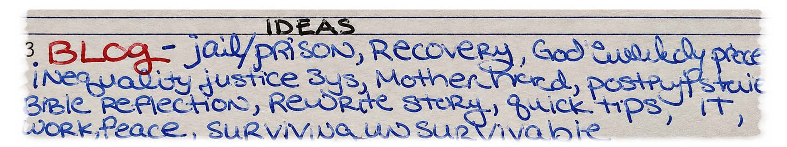
But I didn't get here alone. People helped me. People believed in me. People gave me opportunities when I needed them most.
Now I can't stop thinking about the women who are still sitting in prison writing their own plans, wondering if anybody will give them a chance to make those plans real, especially women without a strong support system.
I am now creating Cell to Sunrise to try to help the next woman get the opportunity to live the future she's trying to imagine.
The Future I Wrote in Prison
While I was going through some of my old prison notebooks, I almost cried.
Not every goal was for after release. I made goals I wanted to complete while I was still in prison too.
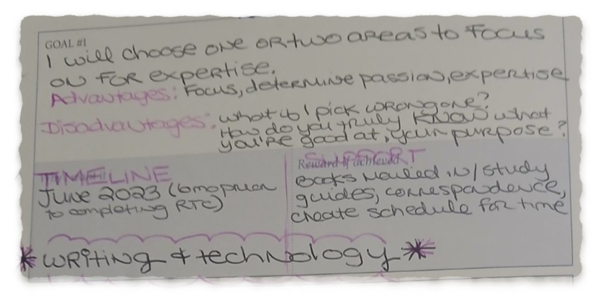
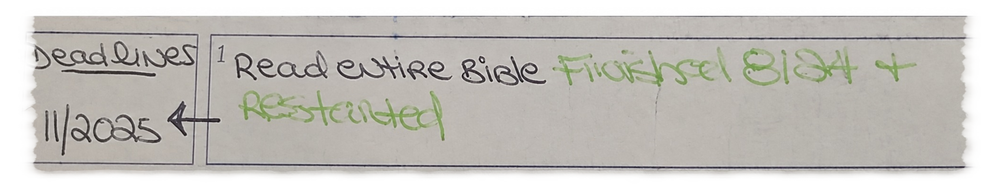
In October 2023, I filled out a self-discovery questionnaire in my planner. One question asked what I wanted to give back to the world and how I wanted to be remembered.
I wrote that I wanted to use my talents and testimony to help others.
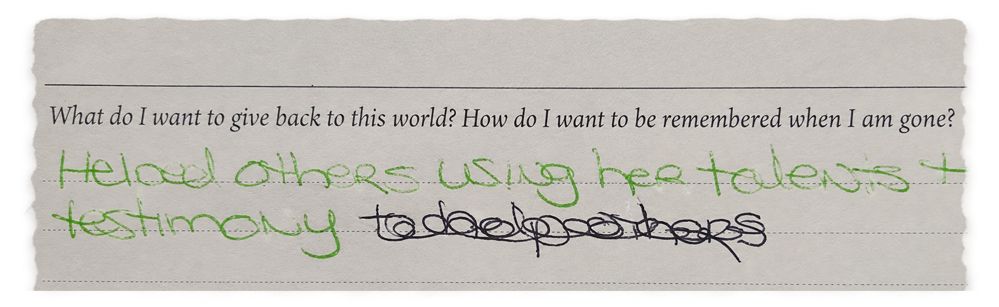
Then I found my reentry plans. I gave myself one year to buy a car, eighteen months to rent an apartment, and three to five years to start a business and nonprofit.
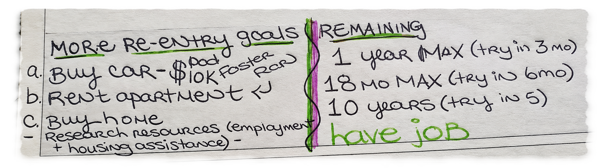
Three to five YEARS, y'all.
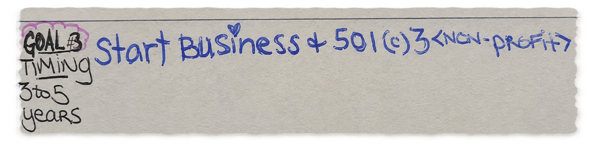
I haven't even been out for a year.
Yet I have a career I love, my own apartment, a car, financial stability, and a community of people who genuinely support me. I'm rebuilding my business, writing my Cell to Self, and now developing a nonprofit as we speak.
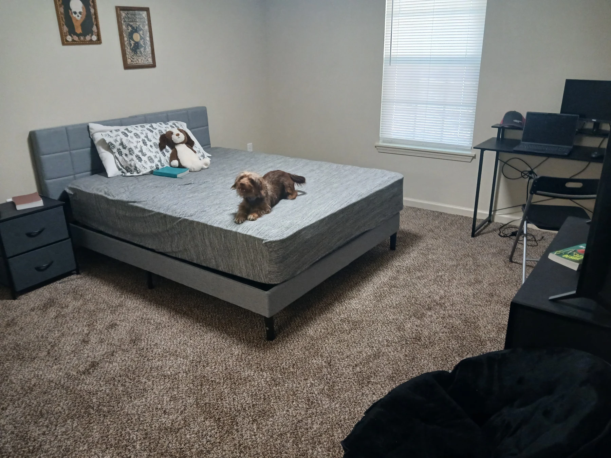
Now don't get me wrong. I haven't accomplished everything on those pages. Some of the things I want most I am still praying for and leaving in God's capable hands. My life isn't perfect, and I certainly don't have everything figured out.
But sometimes I look around in wonder as I try to keep up with all the blessings God has given me.
Because whatever God is doing in my life, it's bigger than what I planned.
I Remember What It Felt Like
When I walked out of prison in November 2025, I had a couple of outfits, hygiene supplies, a bus pass, and a whole lot of uncertainty.
I hadn't been through work release. I didn't have money saved up. I was headed to a halfway house and praying someone would give me a chance.
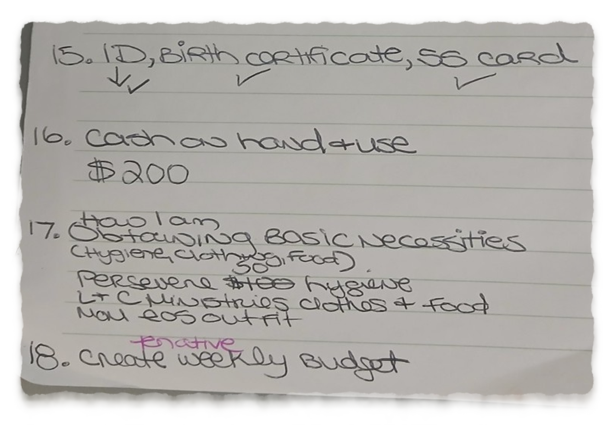
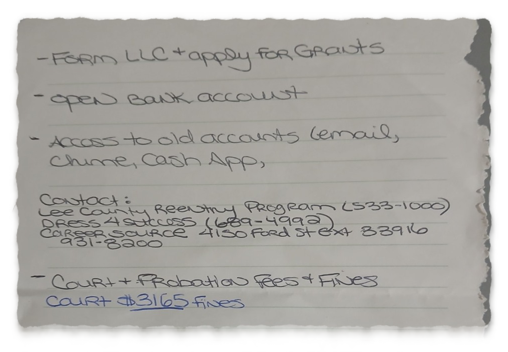
And those first months weren't exactly smooth sailing.
There were issues with my job, housing problems, transportation challenges, and plenty of moments when I wondered whether the stable life I'd planned in prison was ever going to happen.
Some gave me rides. Some gave me a place to stay. Some encouraged me when I needed it, and others took a chance on me professionally. Each one of those opportunities pushed me closer to my goals.
The Women I Left Behind
I still talk to over two dozen women I was incarcerated with. Women I laughed with, cried with, and prayed with. Women who held my hand while I struggled through some of the hardest moments of my life. Women who still give me hope today through their messages of encouragement and support. These women are my cheerleaders and keep me going on tough days.
Some of them have release dates coming up and absolutely no outside support. I can't just forget about where I came from because my own life is going so well.
So I'm just doing what I can. It started with random acts of kindness as I felt led, like a Lyft to work when someone was released, money for diapers, funds for commissary to get hygiene, or simply being a mentor or friend.
Sometimes it's a Walmart gift card for a woman in work release who doesn't have family. Sometimes it's buying an outfit for a woman being released directly from prison. Sometimes it's hygiene supplies, a bus pass, reconnecting family members, or researching housing programs and making phone calls.
So far, I've helped around ten women and am actively helping four more who are being released in the next 30 days.
It might not sound like a lot, but it means everything to me. And I think it means a lot to them too. Every one of those women is a real person with a story, a past, and hopefully a brighter future living in God's purpose.
Somewhere along the way, I realized how many other women are sitting in prison right now with the same fears I had. Women who want to change but don't know where to start. Women who are doing everything they can to prepare but don't have the money, connections, or support.
What if I could help more of them?
The Birth of Cell to Sunrise
I've started building a reentry planning app that I hope to one day get onto the tablets inside prisons, starting with women in Florida. It includes a vision planner and a questionnaire designed to help connect women with resources that actually fit their needs.
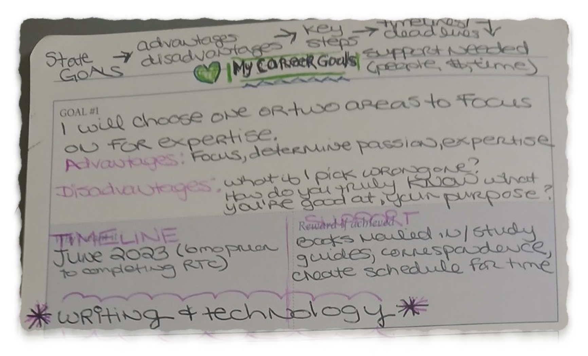
And these aren't just the formal, boring questions you find on government-funded assessments. They're real-life questions from someone who recently got out of a five-year bid, along with input from people who genuinely want to help.
The planning app connects to a statewide Florida resource database for women coming home from prison. Housing, transportation, employment assistance, healthcare, food resources, recovery programs, and community support. All the things that can make the difference between getting out and actually getting started.
Here's what I hope will make Cell to Sunrise different. I'm not just building another giant directory of organizations that may or may not be able to help someone. I'm researching programs across Florida to find out who they actually serve, what they require, and how women can access them. I even have volunteers willing to make phone calls when we can't get answers through email.
I want to know the details that matter when you're sitting in prison trying to figure out where you're going to go. Does this place accept women directly from prison? Can you apply before release? How much money do you need upfront? What if you're on probation?
Those are the questions that can make or break someone's reentry plan.
And I don't want Cell to Sunrise to stop at providing information. I want to continue offering practical help wherever I can, because sometimes the smallest things make the biggest difference when you're coming home.
Because finding a program online is one thing. Finding a program that will actually accept you, and having what you need when you get there, is something else entirely.
And yes, I'm still working full time, writing this blog, sponsoring women in AA, and living my own wonderfully chaotic little life.
Anyone who knows me knows I can't sit still anyway. But also, my recovery programs and the Bible tell me I can't keep what I have without giving it away.
I don't want to wait until I have some huge organization, a fancy office, or a bank account full of money to start helping people.
I can start right where I am.
Actually, I already have.
Maybe This Is What the Blessings Are For
I don't know exactly where Cell to Sunrise will go. I'm still figuring it out.
Three years ago, I wrote down the kind of difference I hoped to make in the world. I didn't know how or when I'd get there.
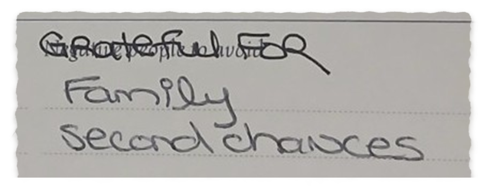
And now, I think I'm beginning to understand.
I keep asking God what He wants me to do with all of the blessings in my life. Because I don't believe He brought me through everything I've been through just so I could have a comfortable life and keep it all to myself.
Maybe some of the things I experienced are exactly what will allow me to reach women who might not otherwise trust someone offering help.
If you know a woman preparing to come home from prison who could use some help, or you know of a resource or organization that might make a difference, please reach out. I can't promise I can help everyone, but I can promise I'll do my best.
Welcome to Cell to Sunrise. Let's gooooo!!!!